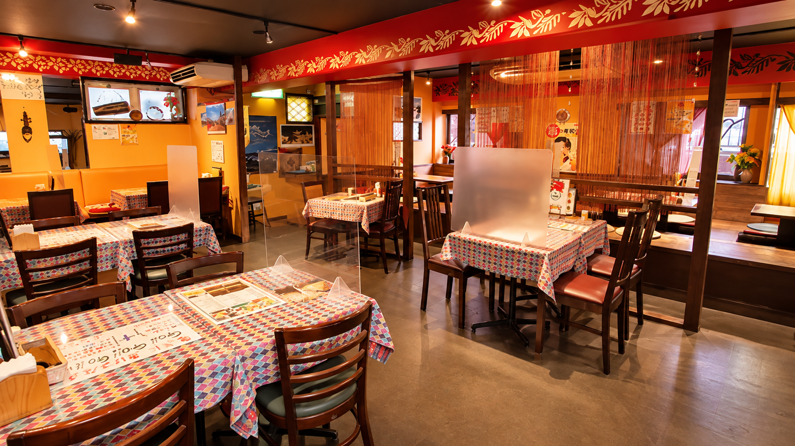
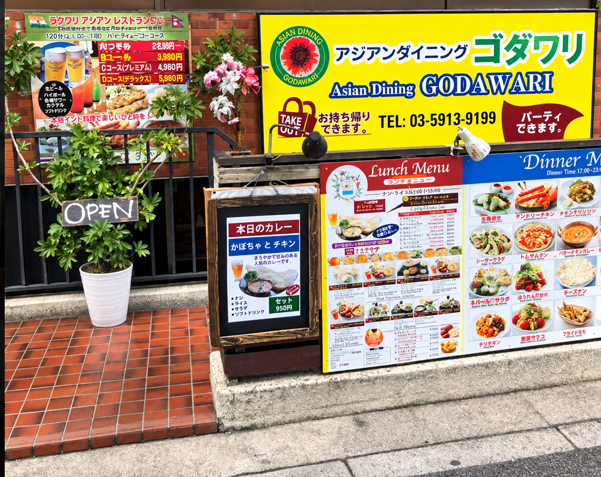

浅草橋店
インド ナンハウス
手作りマサラで味わう、
本格アジアン料理。
浅草橋にある「インド ナンハウス」は、手作りマサラにこだわった本格アジアン料理店です。インド・ネパールを中心に、インドネシアなど多彩なアジア料理を気軽に楽しめます。
おすすめは、香り豊かなチキンビリヤニ、とろけるチーズナン、そして豊富な居酒屋メニュー。ランチからディナーまで幅広くご利用いただけます。

浅草橋店
浅草橋にある「インド ナンハウス」は、手作りマサラにこだわった本格アジアン料理店です。インド・ネパールを中心に、インドネシアなど多彩なアジア料理を気軽に楽しめます。
おすすめは、香り豊かなチキンビリヤニ、とろけるチーズナン、そして豊富な居酒屋メニュー。ランチからディナーまで幅広くご利用いただけます。
新高円寺店
アジアンレストラン＆バー ゴダワリ 新高円寺は、本格アジア料理と種類豊富なおつまみ、お酒をリーズナブルに楽しめるお店です。
鳥皮ポン酢をはじめとした一品料理や生ビールなど、気軽に立ち寄りやすいメニューが充実。お一人様からご宴会まで、幅広いシーンでご利用いただけます。
RESERVATION
各店舗のご予約方法とデリバリーサービスをご案内します。

新高円寺店SNS
インド ナンハウスのLINEで、店舗の情報をご覧いただけます。